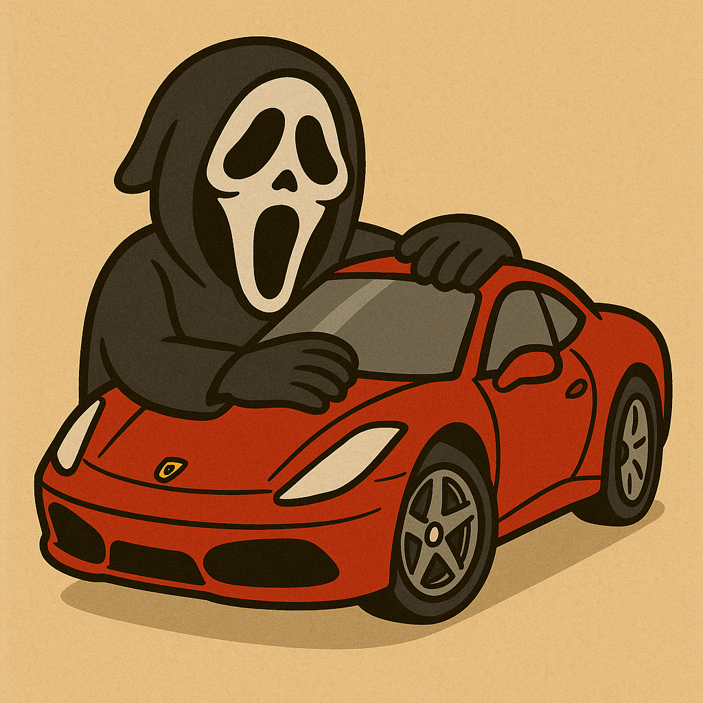

☰
TERROR-
Felipe Patroni

Tela inicial
Trocar usuário
Sair
Leve
Namorado(a)
FamÍlia
Clássicos
Suspense
Meus Amigos
+ Adicionar Amigo
Perfil do Amigo
×
🎬 Filme Favorito
👻 Filmes de Terror Assistidos
Adicionar Novo Amigo
×
Nome do Amigo
Adicionar Amigo